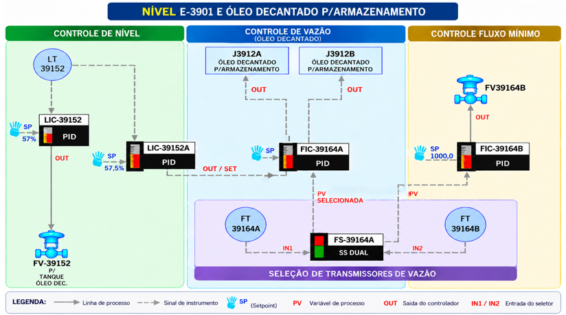

U-39 · Bombeamento e proteção hidráulica
Dois LICs em AUTO. Uma saída de borra. Controle integrado.
Entenda a estratégia completa: LT-39152 fornece nível para LIC-39152 (LV-39152) e LIC-39152A (SP do FIC-39164A). Dois transmissores FT-A/FT-B alimentam o SS-DUAL FS-39164A, que seleciona a PV utilizada pelos dois FICs de vazão. Controle de rotação, proteção de mínimo e válvula de nível atuam no mesmo circuito de retirada.
Tela original · referência visual
O que pode ser afirmado na tela do SDCD


FIC-39164AMAN · PV 0,0 · MV 0,0%
FIC-39164BMAN · PV 0,0 · MV 30,0%
Indicação de rotação−14 rpm (tela capturada)
As duas PVs exibidas na captura estão em zero. A saída MV é comando, não prova de posição real. A leitura de −14 rpm, próxima de zero, não determina sozinha o estado da máquina. Com ambas as malhas em MAN, a correção PID automática não está ativa nessa captura. A unidade da PV na imagem aparenta ser m³/d; os exemplos e as simulações usam m³/h apenas como escala didática, sem assumir uma conversão ou um SP real da planta.
Mapa funcional
Elementos clicáveis
Clique em uma lâmpada no diagrama para abrir a explicação daquele elemento. Uma explicação substitui a anterior.
FS-39164AFT-A/B → SS-DUAL → PV
↓↓
↓ Rotação J-3912A/B (em cascata com LIC-39152A)
↓ FV-39164 (fluxo mínimo)
Mesma linha de borra: LIC-39152 → LV; LIC-39152A → FIC-A → rotação
Leitura atualizada: dois FTs redundantes, seletor SS-DUAL e dois LICs simultaneamente em AUTO. Os setpoints de nível e a configuração exata da interação não foram fornecidos; as curvas e parâmetros de nível da simulação são exclusivamente didáticos.
Conceito central
Duas medições redundantes. Dois LICs e dois FICs trabalhando na mesma estratégia.
FT-39164A e FT-39164B → SS-DUAL → PV para ambos os FICs. Em paralelo, LT-39152 → LIC-39152 → LV-39152 e LT-39152 → LIC-39152A → setpoint do FIC-39164A. Ambos os LICs operam em AUTO e controlam o mesmo inventário da E-3901. A interação entre LV e rotação é o foco do novo laboratório integrado.
V1.2 · Simulação integrada da malha completa · Modos CAS / AUTO / MAN
Interação entre os dois LICs em AUTO
O LT-39152 alimenta simultaneamente LIC-39152 → LV-39152 e LIC-39152A → SP do FIC-39164A → rotação J-3912A/B. Ambos controlam o mesmo inventário por meio do mesmo circuito de retirada de borra. O SS-DUAL FS-39164A seleciona FT-A ou FT-B e fornece uma PV aos FICs de rotação e fluxo mínimo.
CONFIRMADOLT comum, dois LICs em AUTO, uma única saída de borra; LV de nível; cascata e SS-DUAL; PB/I dos FICs.
MODELO DIDÁTICOValores de SP, curvas, inércias, ganhos dos LICs, destino do reciclo e posição do FT são hipóteses configuráveis, não parâmetros da unidade.
NÍVEL · LT-39152—PV comum aos LICs
LV-39152—Abertura física estimada
SP ATIVO · FIC-39164A—CAS · recebido do LIC-39152A
ROTAÇÃO J-3912—MV corrigida pelo FIC-A
VAZÃO À ARMAZENAGEM—Retirada líquida da E-3901
RECIRCULAÇÃO—FV-39164, circuito didático
Animação integrada em tempo real
Uma saída, duas formas de ajustar a mesma vazão
E-3901 · FUNDO
55,0%LT-39152PV NÍVEL →
LIC-39152AUTOMV → LV-39152—
LIC-39152AAUTOSP remoto → FIC-39164A—
UMA LINHA DE RETIRADA DE BORRA
LV-39152ABERT. —
J-3912A/BROTAÇÃO —
ARMAZENAGEMQ SAÍDA —
FT-39164A / BA — / B —
⇢
FS-39164ASS-DUAL—
⇢
FIC-39164ACASPB 60 / I 15—
FIC-39164B → FVPB 300 / I 20—
Vazão na bomba: — m³/h
Vazão entregue: — m³/h
Recirculação: — m³/h
O esquema integra as conexões funcionais conhecidas; não define a ordem física real da bomba e da LV na tubulação. A animação usa um único caminho de entrega para a armazenagem e uma derivação de reciclo ilustrativa. Os valores de vazão são m³/h didáticos, não a escala obrigatória do SDCD.
Tendência — nível e setpoints
PV LTSP LICSP LIC-A
Tendência — vazão e rotação
PV FTQ saídaQ recicloSP ativo FIC-A (CAS/AUTO)
Tendência — elementos manipulados
LV (%)N (%)FV (%)
Diagnóstico integrado
Avaliando condição inicial…
FT-A GOOD
FT-B GOOD
PV selecionada —
Registro de eventos e transições
—
O que observar quando ambos os LICs estão em AUTO?
Em CAS: um aumento de nível provoca ações tendencialmente cooperativas: abrir LV e elevar a referência da vazão por rotação. Depois: se a LV provoca um aumento de vazão acima do SP do FIC-A, o controlador interno pode desacelerar a bomba, compensando parte da ação da válvula. Por fim: se ambos os LICs possuem integrais e SPs distintos, podem ocorrer correções persistentes, saturação ou oscilação; estabilidade não pode ser inferida apenas da indicação AUTO.
Use o botão “SPs de nível distintos” para visualizar o desacordo, e depois reponha “Operação base”. A presença de duas saídas de controle não cria dois caminhos independentes de borra.
Sintonia conhecida dos dois controladores de vazão
FIC-39164A · rotaçãoPB = 60I = 15Kp = 100/60 ≈ 1,667
FIC-39164B · mínimoPB = 300I = 20Kp = 100/300 ≈ 0,333
Os valores de PB/I foram informados para a malha. Para animar uma resposta PI, o modelo assume provisoriamente que I representa tempo integral em segundos no algoritmo ideal simplificado; a unidade, a forma de PID, as ações direta/reversa, anti-windup, limites e filtros efetivos devem ser conferidos na configuração do CENTUM. O ganho proporcional normalizado do FIC-A é 5 vezes o do FIC-B, mas isso não implica velocidade física 5 vezes maior. Os parâmetros dos LICs são somente de laboratório.
Limite da inferência: como o controle funciona realmente?
Ficam confirmados dois LICs simultaneamente em AUTO e um único caminho de retirada, mas não estão confirmados os setpoints de nível, o critério de distribuição de autoridade, as restrições de saída e o posicionamento físico dos transmissores. Assim, o exemplo mostra uma possibilidade fisicamente coerente de interação entre a LV e a rotação — inclusive oposição momentânea entre suas correções —, não uma identificação do algoritmo efetivo usado na refinaria.
Como o FT redundante alimenta os dois FICs, seleção errada ou perda de qualidade repercute tanto na regulação da vazão como no fluxo mínimo. A malha de proteção só pode ser interpretada como controle direto da vazão no rotor se a medição selecionada corresponder ao escoamento que efetivamente atravessa a bomba.
Laboratório dinâmico · sinais e variáveis
Bancada hidráulica — rotação e fluxo mínimo
Bancada isolada da versão anterior: compara dois FICs usando uma PV equivalente à saída selecionada do SS-DUAL. Não representa a malha completa de nível nem a lógica real de seleção; para controle integrado LT/LIC/LV/J-3912, utilize “Malha completa · Interativa”.
Atenção: esta bancada antiga representa somente um subsistema hidráulico equivalente. Seu controle de prioridade é HIPÓTESE; não deve ser interpretado como configuração confirmada na U-39.
SIMULAÇÃO EM EXECUÇÃO
Animação do circuito
Resposta hidráulica em tempo real
↔ Deslize o desenho para visualizar o circuito completo.
Descarga / processo Retorno do mínimo SucçãoFluxo animado ∝ vazão
Diagnóstico automático
Leitura operacional da malha
FIC-39164AAUTO
PV —SP —MV —
—
FIC-39164BAUTO
PV —SP —MV —
—
Tendências de processo
Evolução temporal das variáveis
PV do FTSP-ASP-BVazão real da bomba
RotaçãoAbertura reciclo
Os gráficos mostram a dinâmica simplificada do simulador, não tendências históricas do Centum VP.
Registro de resposta da malha
Estratégia completa · dados confirmados e limites
LT-39152, dois LICs, SS-DUAL e dois FICs
Acompanhe os quatro caminhos de controle que atuam no mesmo circuito de fundo da E-3901.
Caminho 1 · nível direto
LT-39152 → LIC-39152 → LV-39152
O LT mede o inventário de borra da E-3901 e alimenta o LIC-39152. Confirmado: LIC-39152 trabalha em AUTO e atua na LV-39152, cuja função é controlar o nível do fundo da fracionadora. Se a LV atua como restrição na descarga, abrir reduz perda de carga e tende a elevar a vazão enviada ao destino. A posição exata da válvula, características e setpoint real não foram informados.
Caminho 2 · nível em cascata
LT-39152 → LIC-39152A → FIC-39164A
O mesmo LT alimenta o LIC-39152A, também em AUTO. Sua saída determina o SET de vazão do FIC-39164A, que regula a capacidade de bombeamento por rotação das J-3912A/B. O controlador secundário de vazão pode corrigir perturbações do circuito mais rapidamente do que a variável de inventário. Não confundir: LIC-A não comanda uma segunda retirada; regula o mesmo caminho hidráulico da LV-39152.
Caminho 3 · redundância
FT-39164A/B → FS-39164A · SS-DUAL
Existem dois transmissores de vazão. O bloco SS-DUAL seleciona a medição usada como PV pelos FIC-39164A e FIC-39164B. Em AUTO, quando o instrumento selecionado apresenta qualidade BAD, outro FT GOOD pode assumir. Em MAN, a escolha é feita pelo operador. Não se deve interpretar “melhor sinal” como seleção automática do valor numericamente mais plausível: a atuação descrita é baseada no estado da qualidade do sinal. A prioridade normal quando ambos estão GOOD não foi fornecida.
Caminho 4 · recirculação
FS-39164A → FIC-39164B → FV-39164
O FIC-39164B utiliza a PV selecionada e regula a válvula de recirculação de mínimo. Quando a vazão real através da bomba cai excessivamente, a abertura de reciclo pode restabelecer circulação hidráulica adequada, evitando efeitos de operação a vazão insuficiente. A efetividade dessa estratégia depende da posição física do FT, do destino de retorno, da curva da bomba e dos limites de vazão real. A abertura da válvula não resolve NPSH inadequado.
O mesmo circuito: por que duas saídas de controle?
Apenas uma corrente de borra sai do fundo da E-3901 para a armazenagem. A LV-39152 modifica a resistência hidráulica dessa corrente e a rotação da J-3912 modifica a altura manométrica disponível. Para uma mesma vazão, diferentes combinações de rotação e abertura podem produzir pontos de operação distintos, com pressões e consumo energético diferentes. Como ambas influenciam a mesma variável nível, em AUTO podem colaborar ou se compensar momentaneamente. Não há evidência de dois caminhos independentes nem de split-range clássico.
Exemplo dinâmico: o nível sobe → o LIC-39152 tende a abrir LV → aumenta a vazão; o LIC-39152A eleva o SP do FIC-A → tende a acelerar a bomba. Se a abertura da LV elevar a PV de vazão acima do SP do FIC-A, este poderá reduzir rotação enquanto LIC-39152A ainda eleva sua referência. A intensidade e a estabilidade dependem da sintonia e dos limites das três malhas, não do estado AUTO isoladamente.
Com SPs de nível desconhecidos, não se conclui se são iguais, escalonados ou condicionais. Dois controladores integrais recebendo a mesma PV com SPs distintos podem gerar correções persistentes e saturação caso não exista coordenação adequada. O novo simulador permite estudar essa interação com SPs explicitamente didáticos.
Parâmetros informados dos FICs
| Malha | Atuação | PB | Integral | Kp = 100/PB |
|---|---|---|---|---|
| FIC-39164A | Rotação J-3912A/B | 60 | 15 | ≈ 1,667 |
| FIC-39164B | FV-39164 · mínimo | 300 | 20 | ≈ 0,333 |
O ganho proporcional nominal do FIC-A é 5 vezes o do FIC-B, sob normalização equivalente, mas isso não implica velocidade de resposta da bomba 5 vezes maior. O coeficiente integral também depende da unidade efetiva de I e da estrutura de PID do CENTUM. A simulação assume provisoriamente tempo integral em segundos para apresentar tendências, não para reproduzir sintonia real.
SS-DUAL em AUTO e MAN: qualidade ≠ exatidão
| FT-A | FT-B | AUTO | Limite de interpretação |
|---|---|---|---|
| GOOD | GOOD | Seleciona conforme prioridade configurada | Prioridade ainda não confirmada |
| BAD | GOOD | Transfere para B | Comportamento descrito pelo operador |
| GOOD | BAD | Transfere para A | Comportamento descrito pelo operador |
| BAD | BAD | Sem medição GOOD | Ação real depende da lógica SDCD |
| GOOD, porém com erro | GOOD | Pode continuar selecionado | GOOD não valida exatidão física |
Em MAN, o operador escolhe o canal A ou B; o que ocorre com o canal manualmente selecionado quando fica BAD não está comprovado. A simulação destaca a PV como BAD e mantém as saídas FIC como hipótese ilustrativa, sem atribuir automaticamente essa política à planta.
Conservação de massa, uma única saída e reciclo
Q_bomba = Q_armazenagem + Q_reciclo
dV_fundo/dt = Q_entrada − Q_armazenagem
Estas equações supõem retorno do reciclo ao mesmo inventário, líquido aproximadamente incompressível e ausência de outras entradas/saídas relevantes. A recirculação não pode ser somada como se fosse uma segunda retirada definitiva de borra. Se o retorno real for a outro inventário, o balanço deverá ser modificado. A posição dos FT-A/B em relação à derivação também precisa ser confirmada.
Base técnico-científica
Operações Unitárias e Mecânica dos Fluidos
Fundamentos que explicam a existência do controle de rotação e da recirculação de fluxo mínimo.
1. Operação unitária: transporte de líquidos
Bombeamento é a operação unitária de transferência de energia mecânica para um líquido, de forma que possa vencer diferenças de pressão, elevação e perdas por atrito. A bomba aumenta a energia específica do fluido e permite sua movimentação pelo circuito.
Ph = ρ · g · Q · H
Peixo ≈ (ρ · g · Q · H) / η
ρ é massa específica; g é aceleração da gravidade; Q é vazão volumétrica; H é altura manométrica; η é rendimento global. Mesmo em baixa vazão, o eixo pode continuar fornecendo potência; parte das perdas acaba como calor no fluido e nos componentes.
2. Continuidade e conservação de massa
Para líquido aproximadamente incompressível em regime estacionário, a vazão que passa pela bomba corresponde à soma das vazões da descarga destinadas ao processo e ao retorno, sem outros ramos ou vazamentos relevantes.
Qbomba = Qprocesso + Qreciclo
Q = A · v
Diminuir a vazão implica menor velocidade média em uma tubulação de área fixa. A recirculação externa é uma forma de garantir vazão através do rotor independentemente da demanda instantânea do consumidor.
3. Energia e perdas de carga
Entre dois pontos do sistema de líquido, a relação de Bernoulli estendida considera pressão, elevação, velocidade, altura acrescentada pela bomba e dissipação por atrito. A perda de carga geralmente cresce aproximadamente com o quadrado da vazão no regime turbulento.
Hsist ≈ Hestática + K · Q²
Uma válvula abre ou fecha, alterando a resistência de um ramo. Ao abrir o reciclo, o escoamento encontra um caminho paralelo, alterando o ponto de operação da bomba.
4. Curva da bomba e ponto de operação
A interseção entre a curva H×Q da bomba e a curva do sistema define um ponto de operação. Rotação maior desloca a curva de bombeamento, geralmente elevando altura disponível e capacidade de vazão. Mudanças de contrapressão ou obstrução deslocam a curva do sistema.
O BEP é o ponto de maior eficiência. O fabricante estabelece regiões preferenciais e admissíveis de operação. O limite mínimo seguro não pode ser deduzido apenas do gráfico desta página.
Bomba N=100%Bomba N=83%Curva do sistema
Gráfico conceitual: curvas didáticas, sem correspondência dimensional com a J-3912.
5. Leis de afinidade e velocidade
Para o mesmo impulsor e pontos semelhantes de operação, aproximadamente:
Q₂ / Q₁ ≈ N₂ / N₁
H₂ / H₁ ≈ (N₂ / N₁)²
P₂ / P₁ ≈ (N₂ / N₁)³
Essas relações não afirmam que a vazão de uma instalação fixa crescerá exatamente na mesma proporção da rotação: a curva do circuito também determina a vazão efetiva.
Q relativa—
H relativa—
P relativa—
6. Por que baixa vazão danifica uma bomba?
Recirculação interna: em determinadas regiões de baixa vazão há separação de escoamento, vórtices e até reversões locais de fluxo no impulsor. Esforços hidráulicos: o carregamento radial e axial pode se tornar desfavorável, aumentando vibração e fadiga. Aquecimento: a dissipação de energia em pouco fluido pode elevar a temperatura local. Selos e mancais: sofrem efeitos indiretos de calor, vibração e deslocamentos do eixo.
Cavitação: ocorre quando pressões locais caem abaixo da pressão de vapor; em baixa vazão pode estar associada à recirculação interna, mas não é idêntica a ela. NPSH insuficiente é outra causa importante e não é resolvida necessariamente pela abertura da válvula de mínimo.
7. Limites mínimos: térmico e estável
Vazão mínima térmica: limite abaixo do qual o aquecimento do líquido torna a operação inadequada. Vazão mínima contínua estável: limite relacionado à estabilidade hidráulica e mecânica. A vazão mínima admissível depende dos critérios do fabricante, da rotação, das condições de líquido e da finalidade operacional.
Uma bomba pode ultrapassar o limite de estabilidade antes do limite térmico ou vice-versa. Portanto, “não está quente” não equivale a “está segura”. O SP-B do simulador é ajustável para fins pedagógicos; não é a especificação da bomba.
8. Retorno de recirculação e dissipação térmica
Um reciclo pode retornar a vaso ou linha de sucção, conforme projeto. Se retornar imediatamente à sucção, o líquido pode sofrer aquecimento acumulado e outras consequências. A queda de pressão na válvula também gera dissipação, exigindo análise de vaporização, cavitação/erosão na válvula e capacidade do retorno.
Reciclar mais do que o necessário pode desperdiçar energia, elevar temperatura, retirar capacidade de envio ao processo e desgastar a válvula. Por isso, a atuação do fluxo mínimo deve ser coordenada com a operação normal.
9. Exemplo fechado de balanço de vazão
Suponha, apenas para demonstrar continuidade, uma vazão mínima admissível de 100 m³/h. O processo demanda 40 m³/h; a abertura do retorno permite 60 m³/h adicionais. Então:
100 = 40 + 60 [m³/h]
A corrente que percorre o rotor é 100 m³/h, embora a corrente entregue ao processo seja 40 m³/h. Esse cálculo é válido apenas se o FT e a disposição das linhas forem interpretados corretamente. Se a válvula estiver travada fechada e a demanda for 40 m³/h, a bomba pode operar abaixo do limite seguro.
10. Dois LICs em AUTO e a resposta do mesmo inventário
A LV-39152 regula a restrição do mesmo caminho de retirada cujo bombeamento é influenciado pela velocidade J-3912. Uma alteração na válvula desloca a curva do sistema; o FIC de vazão pode responder reduzindo ou elevando rotação para cumprir o setpoint vindo do LIC-39152A. O fechamento correto do balanço inclui apenas a retirada líquida à armazenagem. Em especial, a vazão total pela bomba pode permanecer acima da vazão entregue quando a FV-39164 está aberta.
A_efetiva · dh/dt ≈ Q_entrada − Q_armazenagem
Não se deve assumir, sem documentação, ganhos e referências reais dos LIC-39152 e LIC-39152A. Uma sintonia que não considere o acoplamento pode causar compensação persistente, maior movimentação de atuadores ou oscilação.
11. Redundância de medição e seleção por qualidade
FT-39164A e FT-39164B fornecem redundância de sinal ao SS-DUAL FS-39164A. Uma leitura GOOD pode estar enviesada; uma leitura BAD pode ser substituída automaticamente por um FT GOOD. O SS-DUAL melhora a disponibilidade da PV, porém a saída selecionada continua sendo um ponto comum para os dois controladores de vazão. A falha simultânea dos dois FTs ou uma seleção equivocada pode afetar controle de rotação e proteção de mínimo.
12. Comparação de sintonia PI dos FICs
Com PB-A=60 e PB-B=300, a razão dos ganhos proporcionais normalizados é 5:1, pois Kp=100/PB. Sob hipótese de PI ideal com integral expresso em segundos, Ki,A≈1,667/15 e Ki,B≈0,333/20, razão aproximada 6,67:1. Essas relações comparam parâmetros matemáticos; não comparam diretamente velocidades de posicionamento de LV, FV ou aceleração física da bomba. O algoritmo, a escala e a unidade real precisam ser conferidos no CENTUM.
Treinamento CIC · intervenções controladas
Cenários de resposta e diagnóstico
Carregue um distúrbio no simulador, observe PV, SP, MV, vazões e tendências e responda à pergunta operacional. As situações são didáticas e não equivalem a procedimentos autorizados de operação.
Novidade V1.1 · Cenários de interação dos dois LICs em AUTO
Agora os cenários principais incluem resposta simultânea da LV-39152 e do FIC-A, ambos a partir da mesma medição de nível, além de falha BAD e seleção manual do SS-DUAL. Os botões levam à bancada integrada com as duas malhas de nível em AUTO por padrão.
Avaliação técnica · raciocínio operacional
Quiz e decisões sobre a malha
Avalie diagnóstico dos dois LICs em AUTO, SS-DUAL FT-A/B, cascata de nível-vazão e risco de fluxo mínimo. As perguntas e as alternativas são embaralhadas a cada tentativa.
Questão 1 de 14
Responda com base em hidráulica, controle e diagnóstico.
Instrumentação e engenharia
Checklist de validação da malha real
A arquitetura principal já foi confirmada. O checklist agora foca nas informações ainda desconhecidas — SPs, posição dos instrumentos, lógica de coordenação e parâmetros de segurança.
Dados necessários para confirmação no SDCD e documentação
O checklist é local desta sessão; não envia informações nem modifica o SDCD.
Fontes técnicas de apoio
Hydraulic Institute / Pumps & Systems — recirculação interna e danos a baixa vazão ↗KSB — comportamento hidráulico fora do ponto de melhor rendimento ↗Chemical Processing — recirculação de mínimo e bombeamento com variação de velocidade ↗
As fontes sustentam os princípios gerais. Nenhuma delas fornece o P&ID, a curva ou a lógica configurada especificamente para a J-3912.
Escopo do simulador
A V1.1 acrescenta um modelo dinâmico único da E-3901, com dois LICs em AUTO, LV-39152 no mesmo circuito de borra, FIC-A por rotação, FIC-B para mínimo e SS-DUAL FT-A/B com GOOD/BAD e MAN/AUTO. Curvas hidráulicas, tempo de resposta, ganho dos LICs, referência de níveis e destino do reciclo são exemplos ilustrativos; não equivalem à programação real do CENTUM VP. A bancada hidráulica antiga é mantida separada para exercícios de subsistema.
Para validar a implantação real são necessários, no mínimo, P&ID atualizado, narrativa funcional/controle, configuração dos blocos do Centum VP, curva da bomba versus rotação, vazão mínima autorizada e documentação da válvula de recirculação.